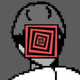
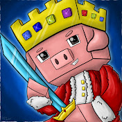
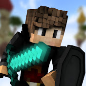
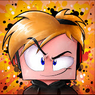

A Minecraft sikere nemcsak a fejlesztéseken múlt, hanem azon a hatalmas online közösségen is, amely videókon és élő közvetítéseken keresztül életben tartotta a játékot. A tartalomgyártók kulcsszerepet játszottak abban, hogy a Minecraft több lett egyszerű játéknál: globális jelenséggé vált. Az évek során különböző korszakok és stílusok alakultak ki, amelyeket meghatározó alkotók formáltak. Ők új formátumokat teremtettek, népszerűsítették a kihívásokat, a túlélést, a versengést és a kreatív építést, és generációk számára tették meghatározó élménnyé a játékot.

A Minecraft globális történetében az egyik legnagyobb hatású tartalomgyártó PewDiePie volt. Bár nem kizárólag Minecraft-csatornaként vált ismertté, a 2019-es survival sorozata konkrétan új életet lehelt a játékba. Videói hatalmas nézettséget értek el, és milliók kezdtek el újra játszani vagy éppen először kipróbálni a Minecraftot. A sorozat megmutatta, hogy a játék még évek után is képes tömegeket megmozgatni, és bizonyította, hogy a kreatív szabadság és a túlélés kombinációja továbbra is működik.
A modern Minecraft-korszak egyik legmeghatározóbb alakja Dream. A manhunt videósorozatával új formátumot teremtett a Minecraft tartalomgyártásban. A gyors tempójú üldözéses kihívások, a technikai tudás és a stratégiai játék teljesen új szintre emelték a speedrun és a kompetitív Minecraft világát. A Dream SMP szerveren betöltött szerepe a történetmesélést és a szerepjátékot is új szintre emelte, ami hosszú időre meghatározta az online Minecraft-kultúrát.

Technoblade a Minecraft PvP és stratégiai játékmenet legendás alakja volt. Kiemelkedő harci tudása, intelligens humora és ikonikus, koronás malac skinje egyedi karaktert teremtett. A Minecraft Championship versenyeken és a közösségi szervereken mutatott teljesítménye miatt a neve összeforrt a magas szintű kompetitív játékkal. Hatása túlmutatott a játékon: közössége rendkívül erős volt, és személyisége a Minecraft történetének egyik legemlékezetesebb részévé vált.

A magyar Minecraft-közösségben Rolix az egyik legismertebb és legmeghatározóbb alak. Videói sok magyar játékos számára jelentették az első igazi élményt a túlélő mód, a kihívások és a közösségi játék világában. Tartalmai közvetlen hangvételűek, lendületesek és könnyen befogadhatóak, ami nagyban hozzájárult ahhoz, hogy a Minecraft itthon is generációs élménnyé váljon. Rolix szerepe különösen fontos volt abban, hogy a fiatalabb közönség számára a játék ne csak szórakozás, hanem közösségi élmény is legyen.

ZsDav szintén meghatározó alakja a magyar Minecraft-tartalomgyártásnak. Hosszabb sorozatai, végigjátszásai és kreatív projektjei sok néző számára rendszeres visszatérő élményt jelentettek. Tartalmai stabil minőséget képviseltek, és jelentős szerepet játszottak abban, hogy a Minecraft hosszú távon is népszerű maradjon Magyarországon. A magyar YouTube-os Minecraft-kultúra fejlődésében ZsDav munkássága megkerülhetetlen.